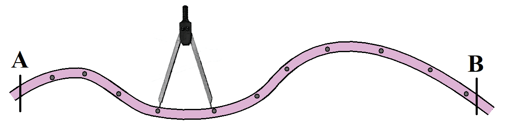
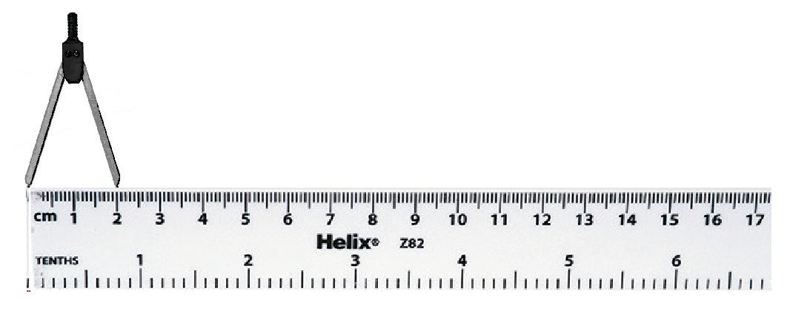

Figure 18: The measured distance of a curved line using a pair of dividers
(d) Measure the distance of each segment you divided using a ruler and record them on paper as presented in Figure 19.

Figure 19: A ruler and a pair of dividers
(e) Add the measured distances to obtain the total distance from points A to B; and
(f) Convert the obtained map distance into the ground distance using the representative fractional scale as in the measurement of straight distances using a piece of paper. For example, if the total map distance obtained in step (d) was 14 centimetres and the representative fractional scale is 1:50,000, then the actual ground distance between points A and B is 7 kilometres.